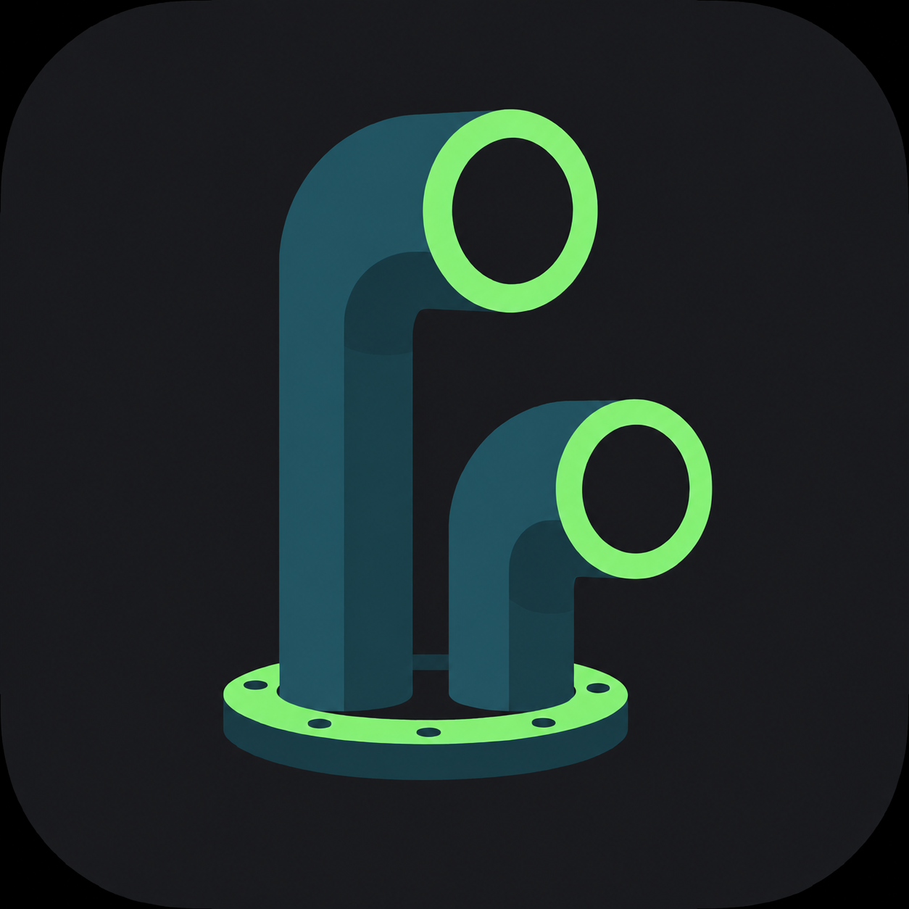

Everything decided across turns 1–8, consolidated: foundations, the full component index, the four screens that hadn't been designed yet, and the Compose mapping. This section supersedes 1c and 1d — earlier turns stay as history.
Sessions reuses the agent tile verbatim with a date group header. Usage is the only place teal appears — data that carries no state must not be green. Review keeps the new cyan for added lines. Terminal is the one screen that goes edge-to-edge mono, with a breadcrumb tile above and a modifier-key row that never covers output.
The system is complete: 9a foundations · 9b components · 8b board · 7a chat · 9c Sessions, Usage, Review, Terminal · 8c splash, empty, widget · 9d handoff.
Only two things changed from 6a: dots became rings, and the lockup replaced the peek face in the header. The live agent's ring emits the ripple — the icon's own gesture, at 9px.

Tool calls stay a timeline: one mono line per call on the 1px spine, no tile of their own, with a chevron on the right. Tapping expands the output into a 4px tile inline (two shown expanded here) — the tile surface is reserved for content, the spine for structure. The send button is a filled 6px square, the only accent surface in the composer.